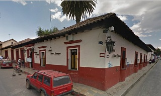
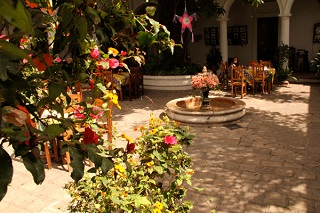
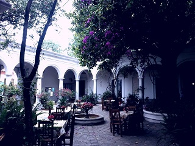
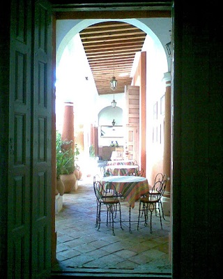
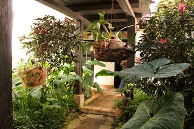

Otra muestra importante del neoclásico de San Cristóbal de Las Casas. Los descendientes del general Miguel Utrilla han sabido conservarla y restaurarla, en su interior se conservan: Sala recibidor y recámara del General con mobiliario de la época. Dicha casa fue construida de 1879 a 1882.
Se localiza en la Avenida General Utrilla frente a la plazuela de santo domingo.
Si usted se encuentra ubicado en la plaza de la paz viendo de frente hacia la catedral puede caminar hacia su izquierda pasando como referencia encontrará la Zapateria Catedral y Frente a este el Restaurant VIA VAI entre estos dos lugares encontrará el andador eclesiástico camine sobre el andador hasta llegar al final del andador, de vuelta a la derecha y tome la calle escuadrón 201, camine una cuadra y al llegar a la esquina encontrará casa utrilla, ahora hotel santo domingo.
Esté es un lugar historico que usted puede visitar y tomar fotografías





posicione el mouse sobre las imágenes